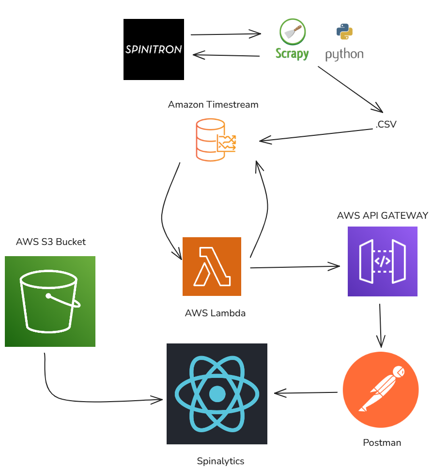
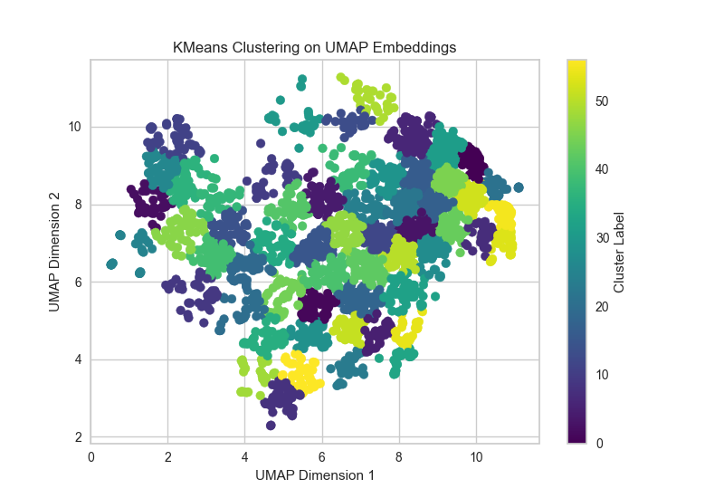

Spinalytics
About
As General Manager of WZBC Newton 90.3 FM, I developed Spinalytics, a faux “Spotify Wrapped” for radio shows. It details the top artists, songs, and genres for 3 shows. I used Scrapy to extract data from Spinitron, stored it in AWS Timestream DB, and built a full pipeline using Lambda, API Gateway, Postman, and S3 for the React frontend. It’s still under active development, with plans to expand coverage to all WZBC shows.
SBIR Database Analysis
About
This analysis was conducted during my internship at The Outpost. Data was collected from the SBIR Award Database, and the descriptions were vectorized using OpenAI’s ada model and TF-IDF. These vectors were reduced using UMAP and clustered with HDBSCAN and K-Means. Insights helped account managers better match clients with DoD contract sectors.
